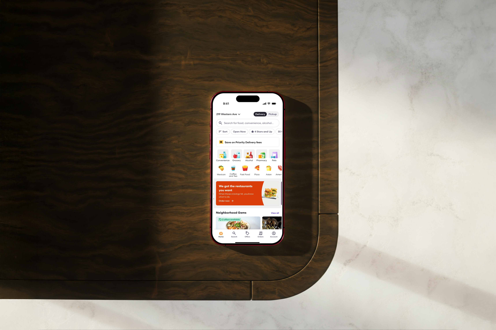
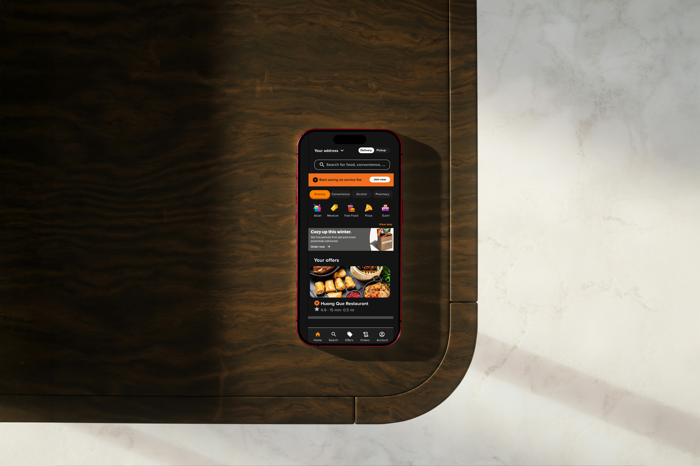
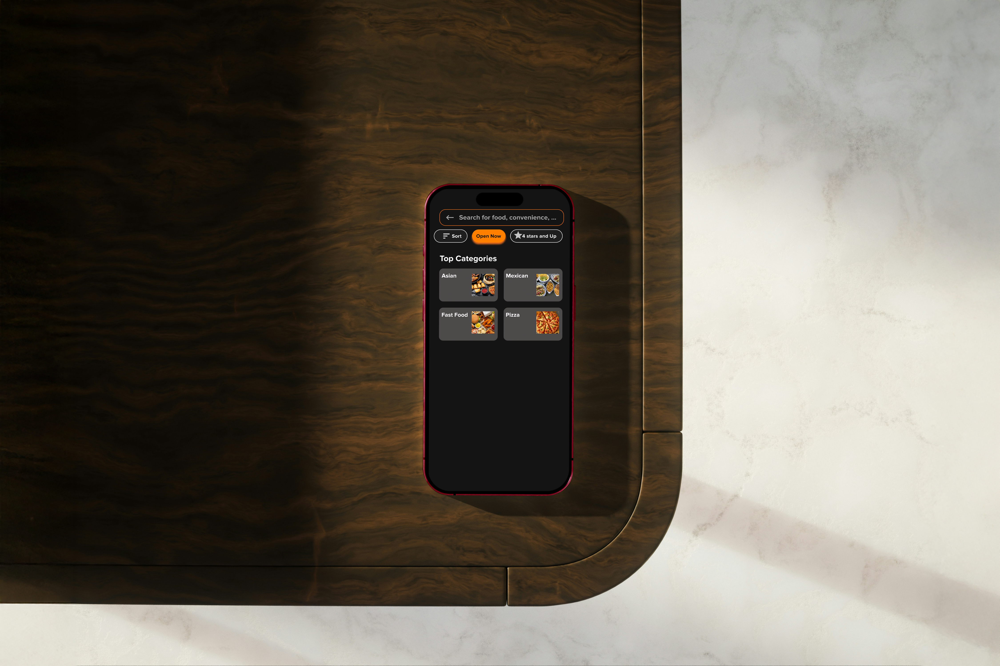

01 — Overview
Understanding how Grubhub supports real users in everyday food-delivery scenarios
This UX research study evaluated the Grubhub mobile app against competitors Uber Eats, DoorDash, and Caviar — pinpointing where it excels and where it falls short. The study combined heuristic evaluation, task-based testing, persona development, and user journey mapping to generate actionable redesign recommendations.
One clear theme emerged from the data: clean minimalism works, transparency builds trust — especially around pricing and fees — and control and predictability matter more to users than flashy features.
02 — Findings
What Grubhub does well — and where it breaks down
Grubhub stood out in the competitive landscape for its clean, high-contrast design, transparent fee display (users know the maximum service fee upfront), best-in-class loyalty via free Grubhub+ for Amazon Prime members, and pickup map options that only show nearby restaurants.
"83% of users spontaneously mentioned fee transparency as a major reason they trust Grubhub."
However, four clear friction points surfaced across the study: in-app help was hard to find (small text, top-right placement — opposite to where most users read from), there was no favorites category despite a heart icon on the homepage, no food-level ratings to know how many people liked a dish, and restaurant results weren't sorted by rating by default.

03 — Methodology
Research-driven from start to finish
The study used a multi-method approach, combining quantitative ratings with rich qualitative observations across four research phases.
User Personas
Developed two detailed personas — Rafael (values convenience, shared decision-making, and zero-effort ordering) and Bao Han (value-for-money, calorie tracking, control over fees and promotions). Both shaped the evaluation lens throughout.
Heuristic Evaluation
Assessed Grubhub against standard usability principles — appearance, content ease-of-use, and navigation — rated on a 1–4 scale. 65% of criteria scored a perfect 4, with comments providing qualitative depth alongside the ratings.
Task-Based Testing
Users completed a full ordering flow: Planning → Selections → Ordering → Waiting → Post-delivery. Each stage was observed for friction, confusion, and delight moments.
Competitive Analysis
Benchmarked Grubhub against Uber Eats, DoorDash, and Caviar across features: search bar, promo codes, loyalty membership, pricing transparency, delivery tracking, contact options, rating system, and pickup options.


04 — Recommendations
Three targeted fixes with the biggest impact
Based on the research, three prioritised design recommendations were developed and prototyped in Figma — each directly addressing a specific friction point identified in the study.
- Need help contact — Move the help link from the top-right to the top-left of the screen and increase the text size. Most users read left-to-right, making help invisible in its current position.
- Personalize favorites — Add a dedicated Favorites section to the Account page, turning the existing heart icon into a functional saved restaurants list with delivery fee and order history shown.
- Food rating system — Display a percentage-liked rating on each menu item (e.g. 90% · 226 ratings), giving users the social proof they need to order with confidence — just like Uber Eats does.
View the full interactive prototype on Figma: Grubhub Prototype →
05 — Reflections
What I learned
- A high heuristic score doesn't mean a product is frictionless — 92% ratings still revealed meaningful gaps that hurt real user journeys.
- Transparency is a design feature: Grubhub's max-fee display is a trust-building UX decision, not just a legal requirement.
- Small placement decisions have big consequences — moving help from top-right to top-left is a one-line CSS change that could dramatically improve discoverability.
- Personas grounded in real behavior patterns (not demographics) made the evaluation much sharper — Rafael and Bao Han had genuinely different needs that the app served differently.
- Competitive analysis is most useful when it goes feature-by-feature, not just impressionistic — the audit table revealed specific gaps that wouldn't have surfaced otherwise.